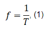
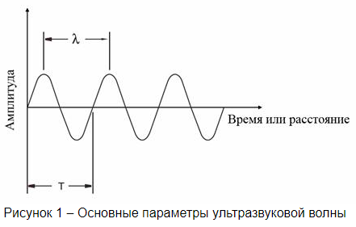
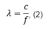
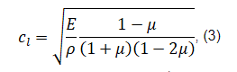
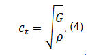

|
Содержание:
|
Основные параметры ультразвука
-
Основными параметрами волны являются длина волны и период. Число циклов совершенных за одну секунду называется частотой и измеряется в Герцах (Гц). Время, требуемое чтобы совершить полный цикл, называется периодом и измеряется в секундах (c). Взаимосвязь между частотой и периодом волны приведено в формуле:

где f – частота, Гц,
T – период, с

Скорость звука в идеальном упругом материале при заданной температуре и давлении является постоянной. Связь между скоростью ультразвука и длиной волны следующая:

где λ – длина волны, м,
с – скорость звука, м/с
В твердых веществах для продольных волн скорость звука

где cl – скорость звука для продольных волн, м/c,
E – модуль упругости, Па,
μ – коэффициент Пуассона,
ρ – плотность, кг/м3
Для поперечных волн она определяется по формуле

где ct – скорость звука для поперечных волн, м/с,
G – модуль сдвига, Па
Дисперсия звука — зависимость фазовой скорости монохроматических звуковых волн от их частоты. Дисперсия скорости звука может быть обусловлена как физическими свойствами среды, так и присутствием в ней посторонних включений и наличием границ тела, в котором звуковая волна распространяется.

|